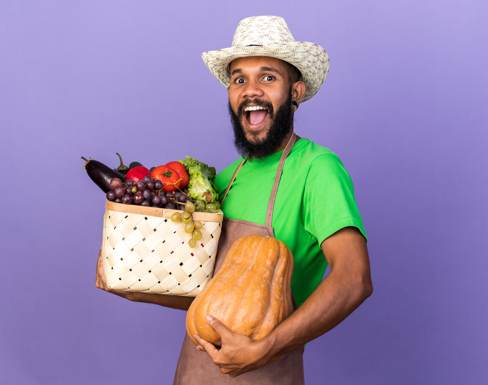

Where It All Began
Orygin Harvest was founded with one clear observation: in a world that demands more of our time than ever before, the simple act of sourcing fresh, high-quality fruit had become a luxury many families simply could not afford — not in cost, but in time.
We built Orygin Harvest to change that. Every week, we source, handpick, and deliver carefully curated fruit boxes directly to your door. No queues. No compromises. No settling for fruit that sat in a warehouse for three weeks before reaching a shelf.
From our very first delivery, we made a promise: every box that leaves our hands will be something we would be proud to put on our own tables. That promise has not changed, and it never will.
What Drives Us
Our Mission
To make premium, fresh fruit effortlessly accessible to every household — delivered weekly with consistency, care, and an unwavering commitment to quality that our customers can always count on.
Our Vision
To become the most trusted name in fruit delivery across South Africa — a brand synonymous with freshness, reliability, and the kind of quality that quietly elevates everyday life.
Our Standard
We do not compromise. Every fruit is assessed for ripeness, colour, and condition before it earns a place in your box. If it does not meet our standard, it does not reach your door.
Our Promise
Consistent weekly delivery. Exceptional quality. A seamless experience from the moment you place your order to the moment your box arrives at your door — every single week.
Who We Serve
Busy Families
Parents who want their children eating fresh, nutritious fruit every day without having to factor a supermarket run into an already demanding schedule.
Health-Conscious Individuals
People who are intentional about what they put into their bodies and who refuse to compromise on the quality of their produce.
Professionals
Those whose time is simply too valuable to spend navigating supermarket aisles — and who appreciate the ease of having premium fruit arrive at their door.
Anyone Who Values Quality
Because exceptional fruit is not a luxury — it is a standard. And we believe everyone deserves to experience it, effortlessly, every week.